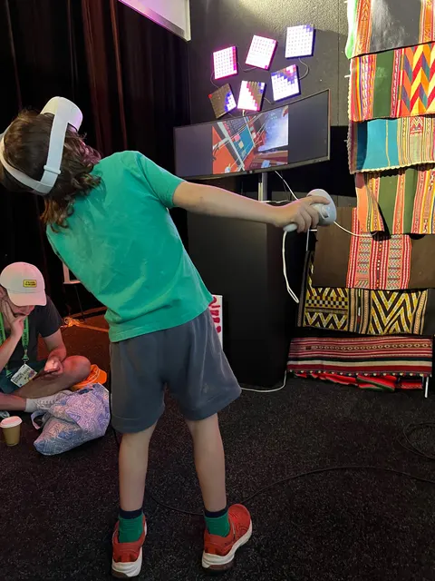
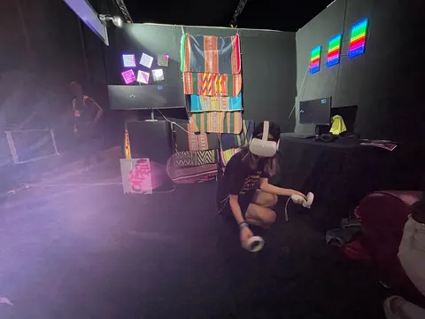
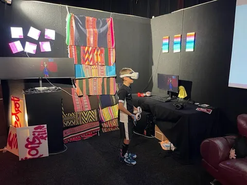
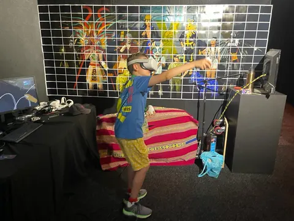
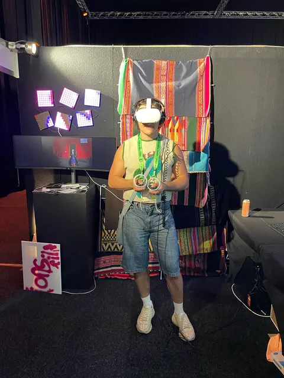
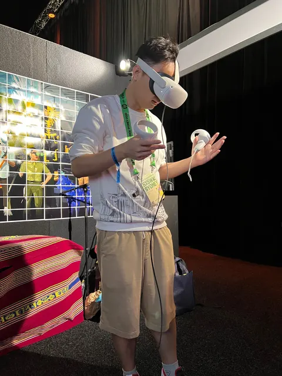
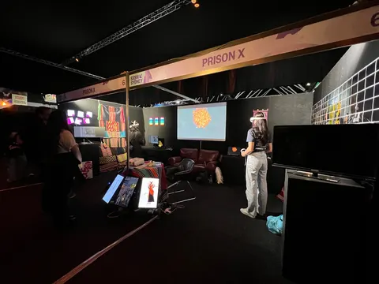
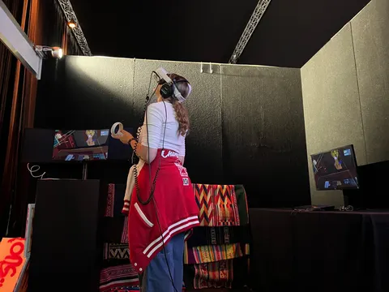
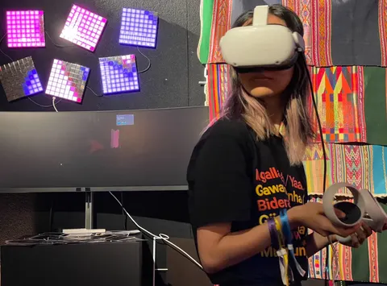

Prison X: unlocking the Gen Z code
From Sundance to Paris and SXSW Sydney, Gen Z visitors move through Prison X by instinct while older audiences walk in circles.

When PrisonX emerged from its 2021 Sundance debut and onto the stages of Cannes, Paris, and beyond, its reception signaled more than just acclaim for an innovative VR experience. It revealed the first traces of a shift between two distinct audiences: the Gen Zers, who took to these immersive worlds with zeal, and the older viewers, who approached with more guarded curiosity.
Sundance offered a glimpse into this dichotomy, as PrisonX stood out for its ambition in inviting meaningful interaction. However, it wasn't just a critical breakthrough but also an indicator of changing appetites among younger audiences. As it continued to major festivals worldwide, PrisonX would repeatedly display this pattern, intuitive engagement from youth but more hesitant responses from older demographics seeming to seek familiar footing.











In Paris, known for its artistic revolutions, the Gen Z crowd tuned quickly into PrisonX and its experimental format. More than just mastering the VR technology, their receptivity pointed to an appetite for narrative experiences that defy straightforward, linear convention. In contrast, older attendees often grappled to acclimate, suggesting ingrained expectations around storytelling modes and methods.
By the time PrisonX made its way to SXSW Sydney, its reputation had preceded it - The youth maneuvered through the experience with a kind of instinctual grace, while the older generations, those who have been consumers of a more passive entertainment regime, found themselves literally going in circles. It wasn’t just the unfamiliarity with VR headsets; it was as if their minds were trying to walk a new path, but their feet kept tracing the old, well-worn tracks.
This isn't a mere tech gap we're talking about. It's a creativity chasm. The Gen Z crowd doesn't just absorb content; they want to play with it, twist it, and understand it from the inside out. In contrast, the older viewers, so used to a world where stories are told to them, found themselves lost hwhen asked to step into the story themselves.

Prison X transports audiences into a mythological
Neo-Andean underworld, translating indigenous Adean perspectives on time, space and mythology into an immersive 3D realm. The experience was brought to life through photogrammetry of a real Bolivian prison, then hand-painted in VR using Tilt Brush before being imported into Unity’s interactive engine. Characters embody Andean futurism, blending magical realism with a contemporary context. Advanced motion capture and spatial audio heighten the sense of immersion in this nonlinear storyworld.
The experience reveals the differing stances not as fixed opposites, but as indicators of gradual generational shifts in creative engagement. For the Gen Z participants, PrisonX unlocked their appetite for interactive narratives they can reshape, showcasing an intuitive ability to engage with nonlinear storytelling in immersive formats like VR.
Their 40 minutes of rapt attention speaks volumes about the Gen Z mindset. Where the average VR experience might only capture interest for minutes, these young individuals chose full immersion in the Neo-Andean underworld. They did not merely observe through a headset; they stepped into a living narrative that demanded their active participation.
This desire for co-creation contrasts sharply with the more passive entertainment consumption of older generations. While the latter often struggled with the unfamiliar VR navigation, Gen Z moved through it with almost innate understanding. It wasn’t just tech-savviness; it was a paradigm of engagement. Where the elders sought familiar pathways, the youth forged new trails.


PrisonX represents this divide - between passive consumption and active collaboration. Gen Z views media not as pre-packaged content, but as a creative canvas to interact with. A playground for imagination. A workshop for participatory storytelling.
The experience brings their appetite to life. But it also poses deeper questions for the industry and creators worldwide: How do we empower audiences of all ages to become co-creators? How can we design narratives that evolve with their input? And how might we adopt the fluidity and imagination that Gen Z brings to these virtual worlds, regardless of our own generational lens?
As immersive media expands, “PrisonX” makes clear that the future will be shaped by those eager not just to see these new worlds, but ready to inhabit them. Gen Z has unlocked the code, and signaled that the most captivating stories are yet to be told.